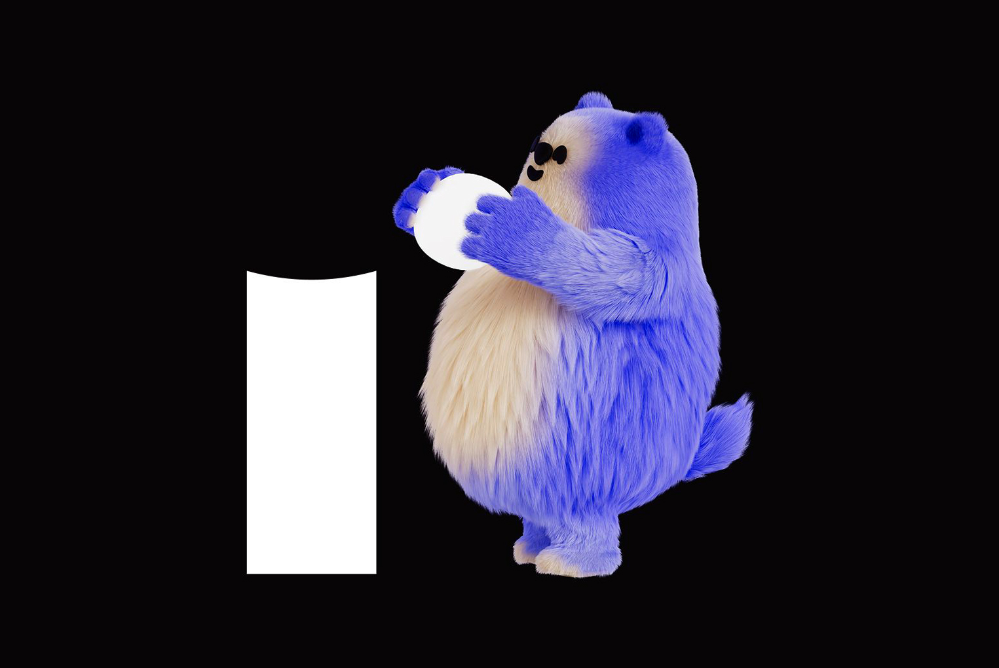
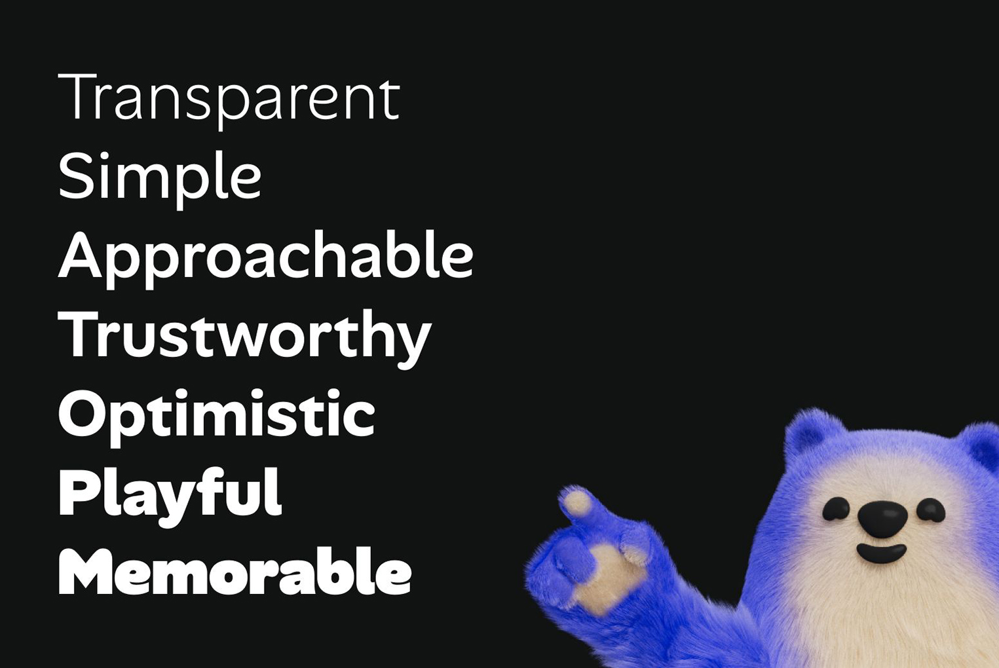
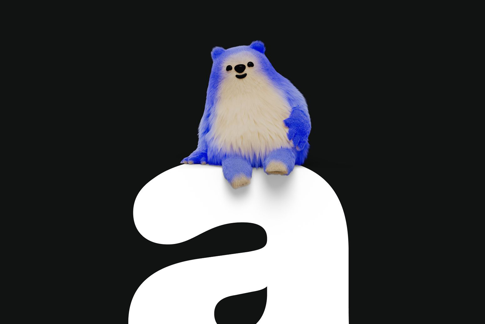
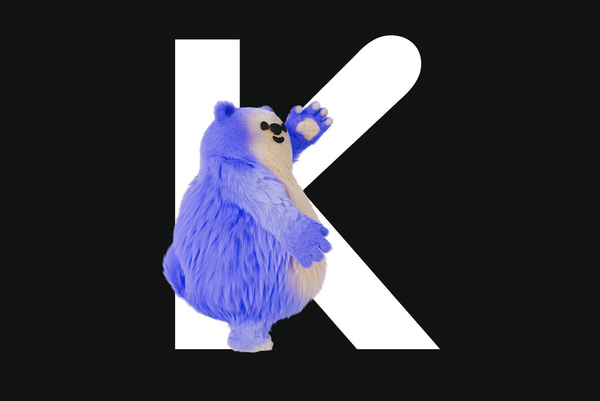
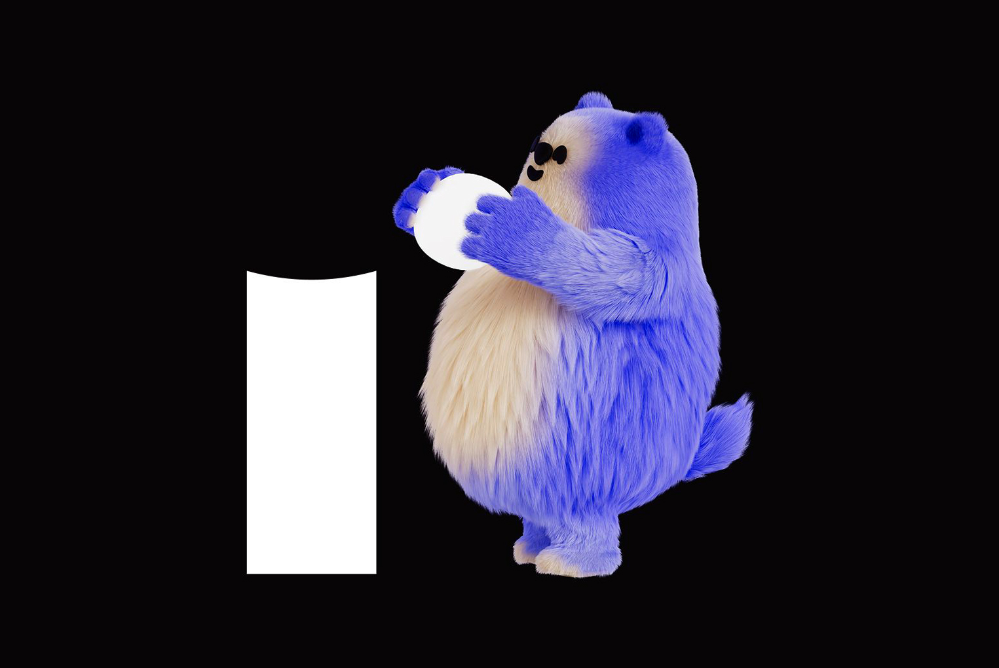
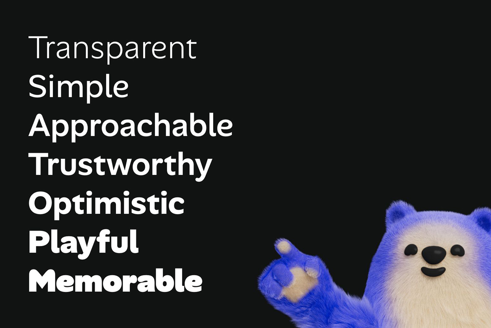
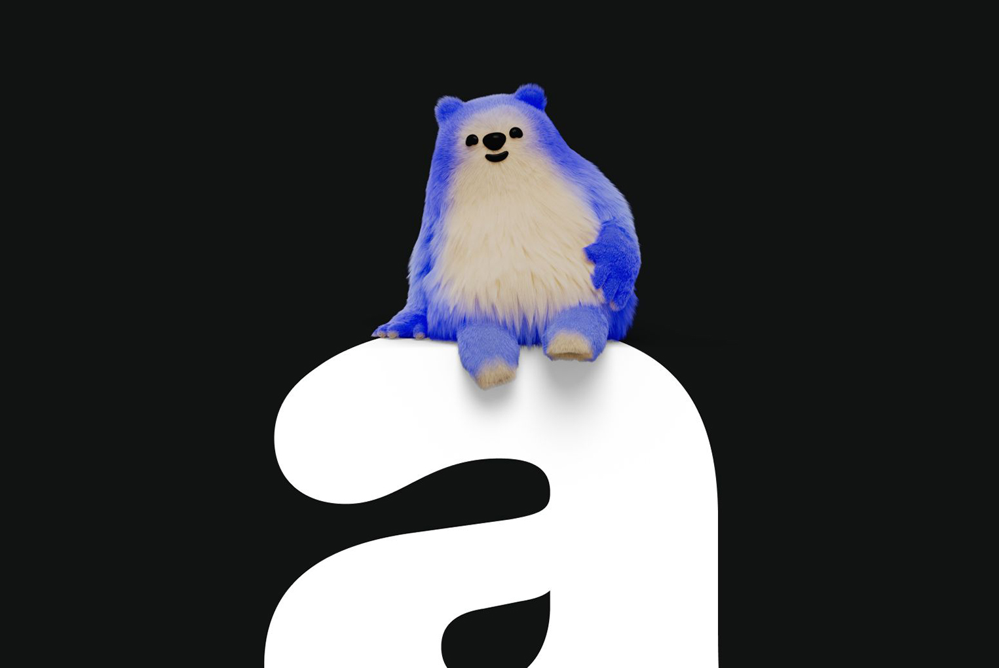
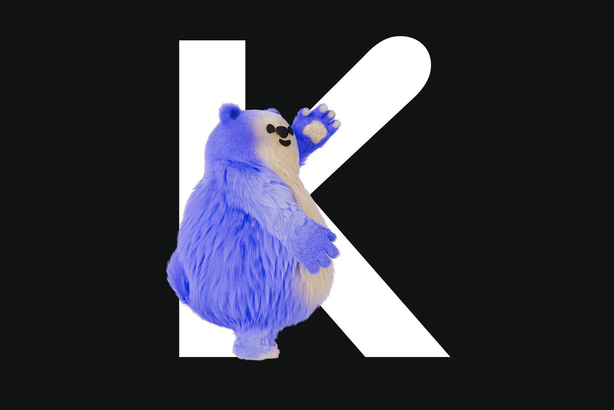

Alan Sans is an exercise in style, balancing the utilitarian side of typography with its expressive potential. We wanted a typeface that could remain functional in an interface context for instance, while also standing out more vividly on marketing applications. The result is a playful sans-serif, built on a traditional "grotesque" skeleton, but reinterpreted with a softer, more flexible visual treatment.
This tension between simplicity and expressiveness is also reflected in the weight progression of Alan Sans's seven styles: the bolder you go, the more personality the typeface reveals. In short, Alan Sans is a reflection of our brand's dual nature. It aims to be robust *yet* gentle, serious *yet* personable, simple *yet* sophisticated, transparent *yet* noticeable. It's our "not so corporate" corporate typeface.
You can also read a detailed blog article about its creation here.
To contribute, see github.com/alan-eu/Alan-Sans.
 






